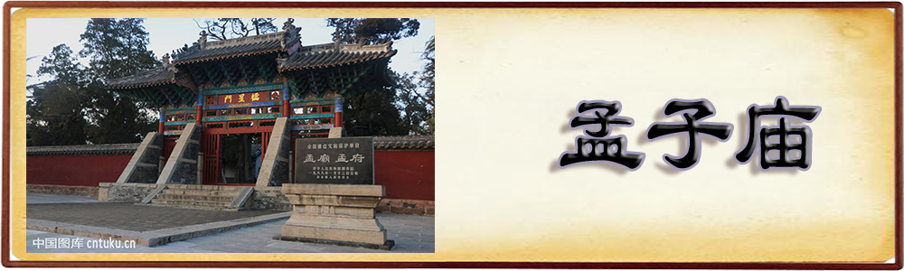

|  |
孟庙，又称亚圣庙，位于山东省济宁市邹城市亚圣府街44号，为历代祭祀战国思想家孟子之所。 孟庙呈长方形，五进院落，南北长458.5米，东西宽95米．占地4.36万平方米，折66亩。建筑群分东、中、西三路，其以亚圣殿为主体建筑，南北为一中轴线，左右作对称式排列。逐院前进，起伏参差，布局严谨，错落有致，建筑雄伟，院院不同，格局迥异，充分体现了我国劳动人民的创造才能和古建筑的特点，是国内宋元至明清时期的古建筑代表作品。
据《三迁志》记载：孟庙始建于北宋景佑四年(1037年)，座落在城区东北四基山西麓的孟子墓旁。后因濒受水损，北宋宣和三年(1121年)又迁徙于现址。历经金、元、明、清各朝多次重修，累计重修达38次。现存建筑为清康熙年间地震倾圮后重建。院内有亚圣殿、启圣殿、孟母殿、致严堂等殿宇64间。殿7间，高17米，横宽27米，进深20米，双层飞檐，歇山式，绿琉璃瓦覆顶。檐下八角石柱26根，中轴线两侧对称排列寝殿等，庙内共有碑碣石刻350余块，庙内古树苍郁，葱笼茂密，堪称奇观。
孟庙是山东省内现存历史最久远、保存最完整的古建筑群之一，是国内稀存的宋元至明清时期的古建筑代表作品。1988年，孟庙被国务院公布为全国重点文物保护单位。
孟庙正南门为“棂星门”。门内左右各一坊，左名“继往圣”，右名“开来学”。第一进院落的北壁正中为“亚圣庙石坊”。第二进院落的砖铺甬道两侧尽是古老的苍松翠柏，往北为“泰山气象门”。进入此门后，即为第三进院落。此院左右各有门通往庙外，左名“知言门”，右名“养气门”，是过去出于孟庙的主要通道。“养气门”外南侧建有“亚圣木坊”；门内南侧建有“祭器库”三楹。“知言门”内南侧建有“省牲所”三楹。此院北壁，三门并列。正中之门为“承圣门”，门之左侧建有“康熙御碑亭”；左为“启贤门”；右为“致敬门”。
“承圣门”内第4进院落即分为东、西、中三路。中为孟庙主体建筑“亚圣殿”，其后为“寝殿”，其前左右两侧建有“东庑”和“西庑”各七楹，院中有“天震井”和“乾隆御碑亭”。东路“启贤门”内为“启圣殿”，其后为“孟母殿”。从“启贤门”到“启圣殿”甬路两侧，竖立着为数众多的历代碑刻，称之为“孟庙碑林”。西路“致敬门”内为一过道小院，东垣有一小门可通往中路“亚圣殿”院，北壁有一小门为“斋戒门”。这一小院四周墙壁上镶嵌着历代名人谒孟庙题咏等数十块小型碑刻。“斋戒门”内建有“致严堂”三楹。
堂前有两株元代所植的参天银杏，古老的紫藤萝缠绕着银杏树，凌空而上，蜿蜒曲折，美妙奇绝。“亚圣殿”前的露台两侧各有一小门。东名“礼门”，通往东路“启圣殿”院；西名“义路”，通往西路“致严堂”后院的“祧主祠”。“寝殿”西侧亦有一小门，通往西路的最后一处小院“焚帛池”。孟庙总计建有各型殿宇64楹，碑亭2座，木门坊4座，石坊1座。
| @2018，版权所有：儒家文化 |